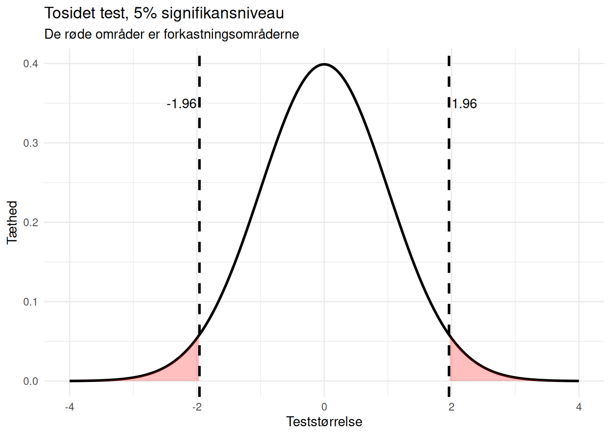
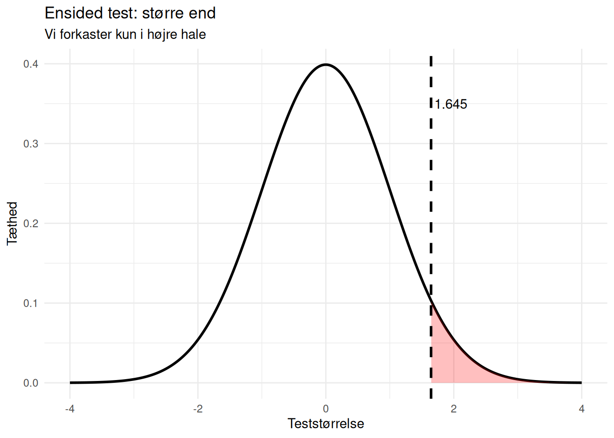
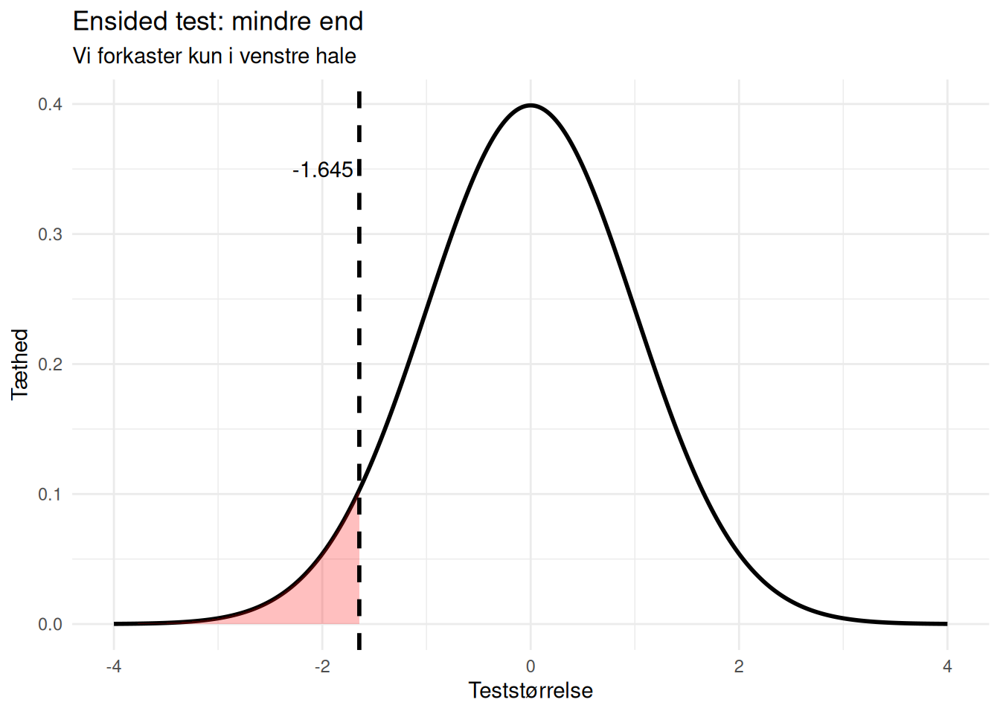
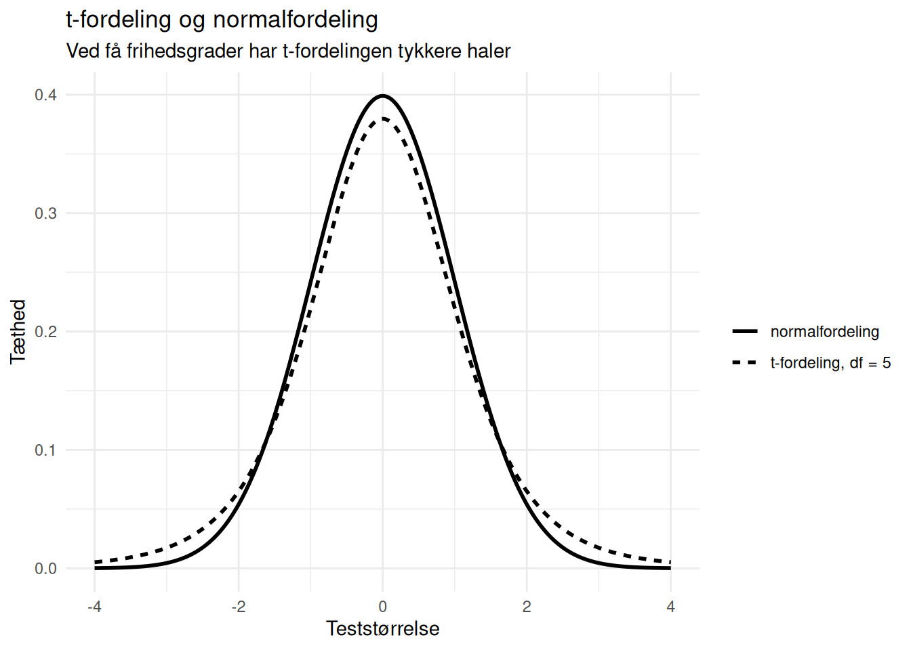

library(ggplot2)Oversigt over standardfejl og kritiske værdier
Standardfejl — hvad er det?
Standardfejlen er usikkerheden på vores estimat.
Den fortæller, hvor meget estimatet ville variere fra stikprøve til stikprøve.
Den generelle idé er:
\[ \text{teststørrelse} = \frac{\text{estimat} - \text{hypotese}}{SE} \]
Så når vi skal lave hypotesetest eller konfidensintervaller, er standardfejlen det afgørende led.
De vigtigste situationer
1. Én middelværdi
Hvis vi har en stikprøve med middelværdi \(\bar{x}\), standardafvigelse \(s\) og størrelse \(n\), er standardfejlen:
\[ SE(\bar{x}) = \frac{s}{\sqrt{n}} \]
Her er:
- \(s\): stikprøvens standardafvigelse
- \(n\): antal observationer
Jo større \(n\) er, desto mindre bliver standardfejlen.
2. Forskel mellem to middelværdier (ikke-parret)
Hvis vi sammenligner to uafhængige grupper, er estimatet forskellen mellem middelværdierne:
\[ \bar{x}_1 - \bar{x}_2 \]
Standardfejlen er:
\[ SE(\bar{x}_1 - \bar{x}_2) = \sqrt{\frac{s_1^2}{n_1} + \frac{s_2^2}{n_2}} \]
Her er:
- \(s_1, s_2\): standardafvigelserne i de to grupper
- \(n_1, n_2\): stikprøvestørrelserne i de to grupper
Usikkerheden kommer altså fra begge grupper.
3. Parrede målinger
Ved parrede data laver vi først forskelle for hvert individ:
\[ d_i = x_i - y_i \]
Derefter beregner vi middelværdien af forskellene:
\[ \bar{d} = \frac{1}{n}\sum_{i=1}^n d_i \]
Standardafvigelsen af forskellene er:
\[ s_d = \sqrt{\frac{1}{n-1}\sum_{i=1}^n (d_i - \bar{d})^2} \]
Standardfejlen bliver så:
\[ SE(\bar{d}) = \frac{s_d}{\sqrt{n}} \]
Det afgørende er altså, at vi arbejder med forskellene, ikke med de to måleserier hver for sig.
4. Én andel
Hvis vi estimerer en andel \(p\), er standardfejlen:
\[ SE(p) = \sqrt{\frac{p(1-p)}{n}} \]
Her er:
- \(p\): den observerede andel
- \(n\): stikprøvestørrelsen
Variansen afhænger altså af selve andelen.
5. Forskel mellem to andele
Hvis vi sammenligner to andele, er standardfejlen:
\[ SE(p_1 - p_2) = \sqrt{\frac{p_1(1-p_1)}{n_1} + \frac{p_2(1-p_2)}{n_2}} \]
Her kommer der igen et bidrag fra hver gruppe.
6. Odds ratio (OR)
For odds ratio arbejder vi på log-skala. Standardfejlen for \(\log(OR)\) er:
\[ SE(\log(OR)) = \sqrt{\frac{1}{a} + \frac{1}{b} + \frac{1}{c} + \frac{1}{d}} \]
hvor \(a\), \(b\), \(c\), \(d\) er cellerne i en 2x2-tabel.
Konfidensinterval og test laves på log-skala og kan bagefter transformeres tilbage ved at tage exponentialfunktionen.
7. Risk ratio (RR)
For risk ratio arbejder vi også på log-skala. Standardfejlen for \(\log(RR)\) er:
\[ SE(\log(RR)) = \sqrt{\frac{1}{a} - \frac{1}{a+b} + \frac{1}{c} - \frac{1}{c+d}} \]
Igen er \(a\), \(b\), \(c\), \(d\) cellerne i en 2x2-tabel.
Kritiske værdier
Den kritiske værdi afhænger af to ting:
- hvilken fordeling vi bruger
- om testen er tosidet eller ensidet
Den afhænger ikke af om vi tester middelværdi, andel, OR eller RR. Det er standardfejlen, der ændrer sig mellem situationerne.
Z-fordeling
Ved z-tests er de vigtigste kritiske værdier:
- tosidet 5%: \(\pm 1.96\)
- ensidet 5%: \(1.645\) eller \(-1.645\)
I R:
qnorm(0.975)[1] 1.959964qnorm(0.95)[1] 1.644854qnorm(0.05)[1] -1.644854t-fordeling
Ved t-tests afhænger den kritiske værdi af frihedsgraderne.
For én stikprøve er frihedsgraderne typisk:
\[ df = n - 1 \]
I R:
qt(0.975, df = 24)[1] 2.063899qt(0.95, df = 24)[1] 1.710882qt(0.05, df = 24)[1] -1.710882Jo større stikprøven er, desto mere ligner t-fordelingen normalfordelingen.
Oversigt
| Situation | Standardfejl | Kritisk værdi |
|---|---|---|
| Én middelværdi | \(s / \sqrt{n}\) | t |
| To middelværdier, ikke-parret | \(\sqrt{s_1^2/n_1 + s_2^2/n_2}\) | t |
| Parrede målinger | \(s_d / \sqrt{n}\) | t |
| Én andel | \(\sqrt{p(1-p)/n}\) | z |
| To andele | \(\sqrt{p_1(1-p_1)/n_1 + p_2(1-p_2)/n_2}\) | z |
| OR | \(SE(\log(OR))\) | z |
| RR | \(SE(\log(RR))\) | z |
Illustration 1: tosidet kritisk område
z_crit <- qnorm(0.975)
df_plot <- data.frame(x = seq(-4, 4, length.out = 1000))
df_plot$y <- dnorm(df_plot$x)
ggplot(df_plot, aes(x, y)) +
geom_line(linewidth = 1) +
geom_area(
data = subset(df_plot, x <= -z_crit),
fill = "red", alpha = 0.25
) +
geom_area(
data = subset(df_plot, x >= z_crit),
fill = "red", alpha = 0.25
) +
geom_vline(xintercept = c(-z_crit, z_crit), linetype = 2, linewidth = 1) +
annotate("text", x = -z_crit, y = 0.35, label = "-1.96", hjust = 1.1) +
annotate("text", x = z_crit, y = 0.35, label = "1.96", hjust = -0.1) +
labs(
title = "Tosidet test, 5% signifikansniveau",
subtitle = "De røde områder er forkastningsområderne",
x = "Teststørrelse",
y = "Tæthed"
) +
theme_minimal()
Illustration 2: ensidet test, større end
z_crit_right <- qnorm(0.95)
ggplot(df_plot, aes(x, y)) +
geom_line(linewidth = 1) +
geom_area(
data = subset(df_plot, x >= z_crit_right),
fill = "red", alpha = 0.25
) +
geom_vline(xintercept = z_crit_right, linetype = 2, linewidth = 1) +
annotate("text", x = z_crit_right, y = 0.35, label = "1.645", hjust = -0.1) +
labs(
title = "Ensided test: større end",
subtitle = "Vi forkaster kun i højre hale",
x = "Teststørrelse",
y = "Tæthed"
) +
theme_minimal()
Illustration 3: ensidet test, mindre end
z_crit_left <- qnorm(0.05)
ggplot(df_plot, aes(x, y)) +
geom_line(linewidth = 1) +
geom_area(
data = subset(df_plot, x <= z_crit_left),
fill = "red", alpha = 0.25
) +
geom_vline(xintercept = z_crit_left, linetype = 2, linewidth = 1) +
annotate("text", x = z_crit_left, y = 0.35, label = "-1.645", hjust = 1.1) +
labs(
title = "Ensided test: mindre end",
subtitle = "Vi forkaster kun i venstre hale",
x = "Teststørrelse",
y = "Tæthed"
) +
theme_minimal()
Illustration 4: t-fordeling vs normalfordeling
df_compare <- data.frame(
x = rep(seq(-4, 4, length.out = 1000), 2),
y = c(dt(seq(-4, 4, length.out = 1000), df = 5),
dnorm(seq(-4, 4, length.out = 1000))),
model = rep(c("t-fordeling, df = 5", "normalfordeling"), each = 1000)
)
ggplot(df_compare, aes(x, y, linetype = model)) +
geom_line(linewidth = 1) +
labs(
title = "t-fordeling og normalfordeling",
subtitle = "Ved få frihedsgrader har t-fordelingen tykkere haler",
x = "Teststørrelse",
y = "Tæthed",
linetype = ""
) +
theme_minimal()
Den centrale pointe
Det er standardfejlen, der afhænger af situationen.
Det er den kritiske værdi næsten ikke.
Ved 5% niveau kan man ofte tænke:
- tosidet: omkring 2
- ensidet: omkring 1.65
For middelværdier med små stikprøver bruger vi dog t-fordelingen i stedet for z-fordelingen.
Kort opsummering
Når vi laver en hypotesetest, skal vi kunne tre ting:
- beregne estimatet
- beregne standardfejlen
- finde den kritiske værdi
Derefter sammenligner vi:
\[ \frac{\text{estimat} - \text{hypotese}}{SE} \]
med den kritiske værdi.